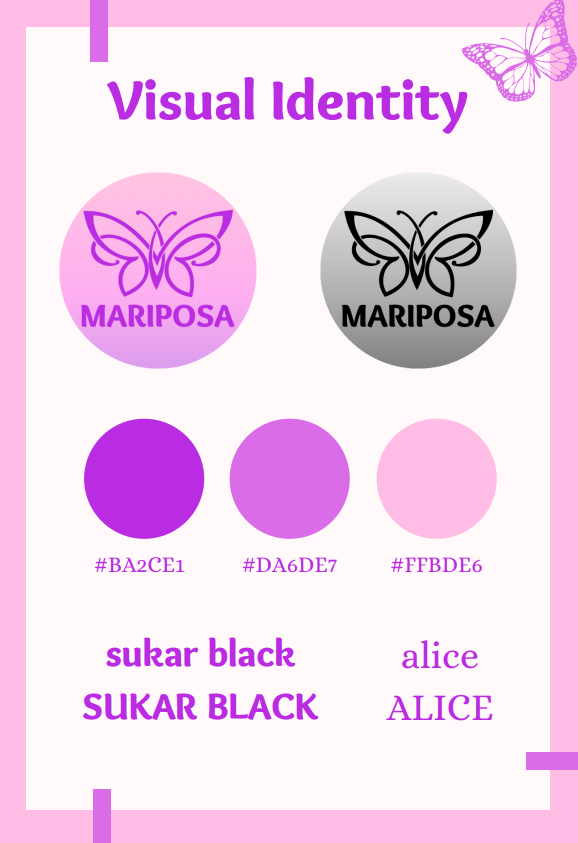

Welcome to the justification page!
This is a page to justify all of our choices made for the design of the website.
Click here to view our wireframe made in adobe XD.
Design Jusification
Colors
Below you can see the colors used for the website. These colors are used for a reason. Based on the information out of the brand road map, Mariposa is a dance studio aimed predominantly towards women and empowering women. The colors chosen can be seen as more feminine rather than gender neutral colors or masculine colors:
logo
Mariposa means butterfly in spanish thus the logo of mariposa contains our company colors with a butterfly in the middle. The reason the butterfly was chosen for the website can be seen in the vision from the brand road map: “In a fast paced world where we all fly past each other, we should take a step back to reconnect, because we believe that even the loneliest caterpillars need to be social butterflies sometimes.”
User testing
User testing was done on a wireframe/prototype in Adobe XD which can be seen within the link at the top of the page. In the first version of the prototype the participant was asked to (the most important feature of the website) register for our services. The participant found it very quickly as our home page contains a call to action and said sign up right away. The participant completed the task in under 5 seconds but had some comments afterward: Consider adding a dropdown menu in the registering section for the available classes that you can register. He also said to consider adding a page in which the level of the consumer is asked so that they can be put within the right group. (because the goal was to find a community) Thus a Dropdown menu in the registration section was added and so was a separate page for the skill level in the prototype. In the second version the participant was asked to again register with an extra task. They must register for a class as a beginner dancer and it should be zumba. This task was performed in about 7 seconds with no problems. This time no functional comments were made/problems were encountered but the participant recommended moving the values and vision from a separate page to the home page. Within the last version of the prototype the new participant needed to once again register for a class as a beginner dancer and it should be zumba. This, just like the last participant, took about 7 seconds. However in the comments and reflection after they said they would’ve liked an option to find out more about the programs right away. Thus a link to the program page was added on the home page.